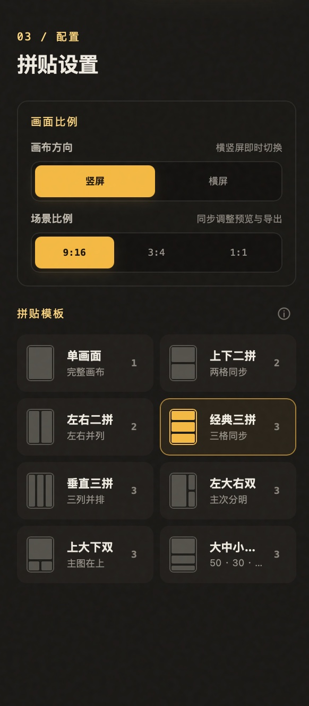
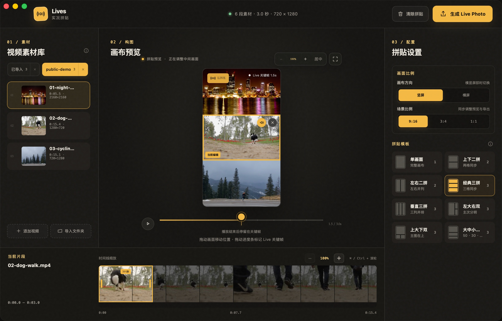
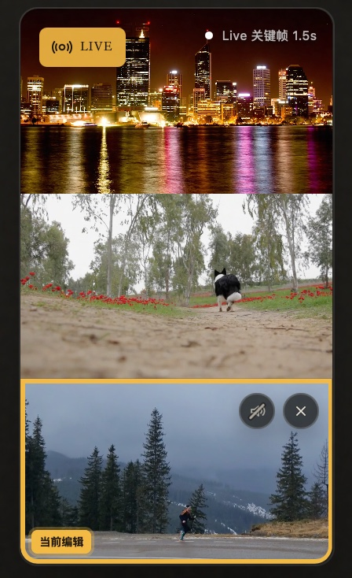

8 种布局
每个画格，都是独立的三秒。
上下、左右、三拼和大小画面自由组合。每个格子都可以单独选段、缩放、移动和开关原声。

macOS 本地实况工作室
从不同视频里挑选 3 秒片段，自由安排画面与关键帧。无需上传，几分钟就能得到一张真正的 Live Photo。
Apple 芯片 Mac · macOS 13+ 正式版本 · 未经 Apple 公证 · 暂无自动更新

真实操作演示
这段演示直接录制自 Lives 开发版：夜景、狗狗和骑行分别占据一个画格，同步播放三秒，并在结束时柔和回到设定的 Live 关键帧。
从视频到 Live Photo
不需要学习复杂的剪辑软件。素材、画布和时间线始终在同一个窗口里。

导入多个视频或一个文件夹，从每段素材里截取连续 3 秒。

把素材拖进画格。一个视频也能重复使用，截取不同瞬间。

设定关键帧和声音，保存到“照片”，或导出 JPG + MOV 配对文件。
为实况拼贴而设计
上下、左右、三拼和大小画面自由组合。每个格子都可以单独选段、缩放、移动和开关原声。

预览播放结束后柔和渐变回关键帧，看到的就是最终 Live Photo 封面。

覆盖五种常用比例，并根据素材质量提供 1080P 或 720P 导出。
本地，就是边界
Lives 直接引用原文件进行处理，不上传，也不会修改源视频。只有在你选择“保存到照片”时，才会请求“仅添加照片”权限。
安装 Lives
当前版本只通过 Lives 官方 GitHub Releases 提供 Apple Silicon DMG。
从本站按钮前往 GitHub Releases，下载与你设备匹配的安装包。
打开 DMG，把 Lives 拖到 Applications 文件夹，再从访达启动。
当前测试版尚未完成 Apple 公证。如系统拦截，请按 Apple 官方说明前往“系统设置 → 隐私与安全性”处理。
反馈与官方渠道
为了保护素材隐私，请不要在 Issue 中上传原视频、私人影像、个人信息或未脱敏日志。
常见问题
是。保存到 Apple“照片”时，Lives 会生成带有配对元数据的 JPEG 与 MOV，并作为一个 Live Photo 资产写入。通过 iCloud 照片同步到 iPhone 后，正常情况下会保留 Live 属性。
只有选择“保存到照片”时才需要。Lives 请求的是“仅添加照片”权限，不需要读取你的整个照片图库；你也可以改为导出到指定文件夹。
当前邀请制预览版仅提供 Apple Silicon（M 系列芯片）构建。Intel 与 Universal 版本仍在评估中。
不会。Lives 使用原文件引用，不复制或修改视频。关闭 App 时只会清理生成过程中产生的临时文件。
暂时不会。当前版本没有配置正式自动更新，请关注 官方 GitHub Releases，核对版本信息后手动下载安装。
唯一公开分发仓库是 github.com/ohmyangboy/lives，官网是 ohmyangboy.github.io/lives。请勿从网盘、群文件或第三方转载页安装。
Lives v__LIVES_VERSION__
微信赞赏
如果 Lives 帮你留住了一个瞬间，欢迎微信扫一扫，支持独立开发继续向前。